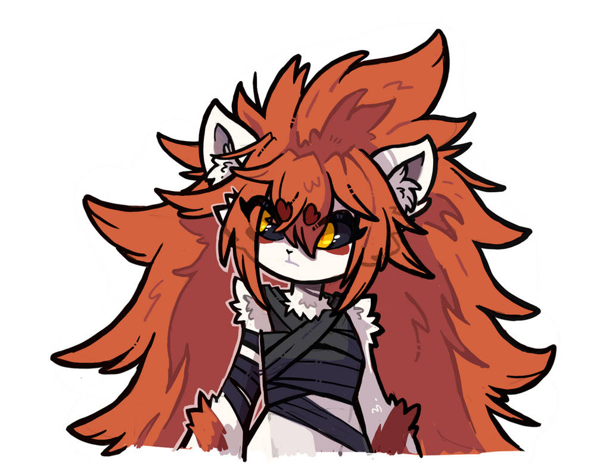
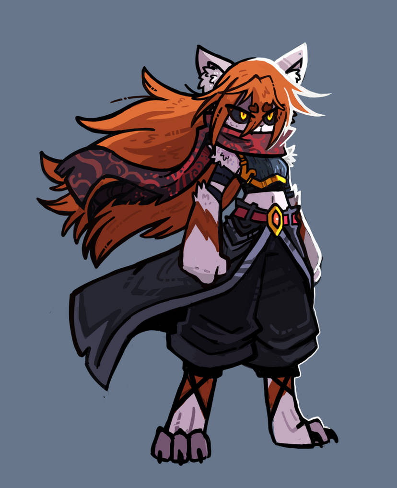
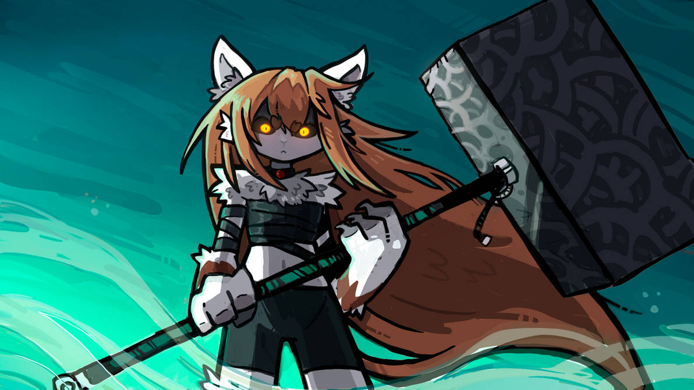
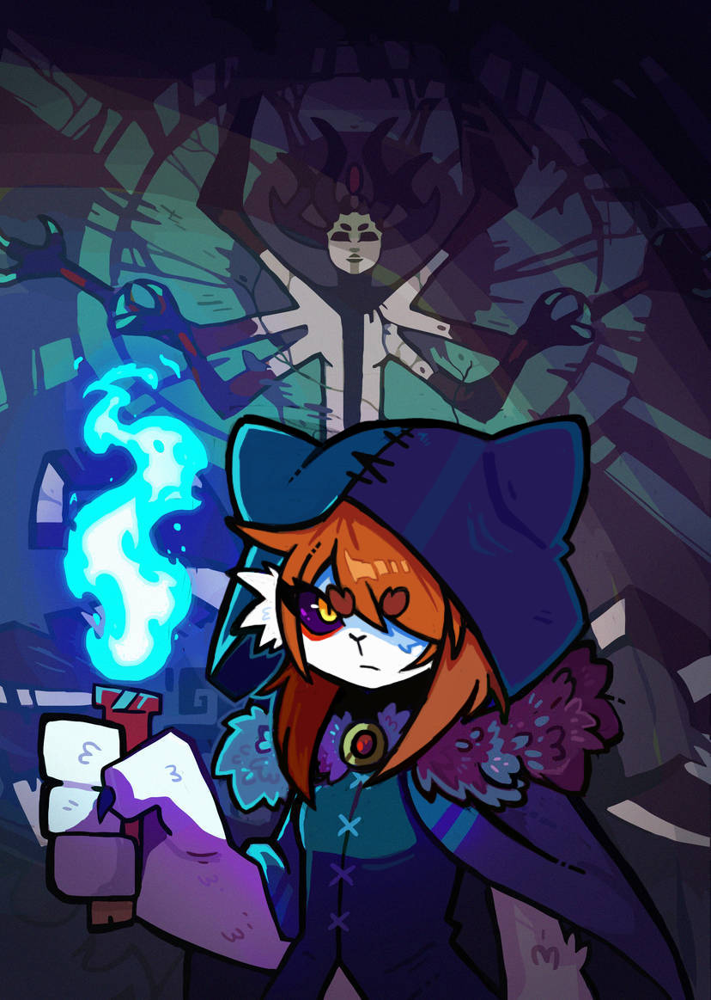
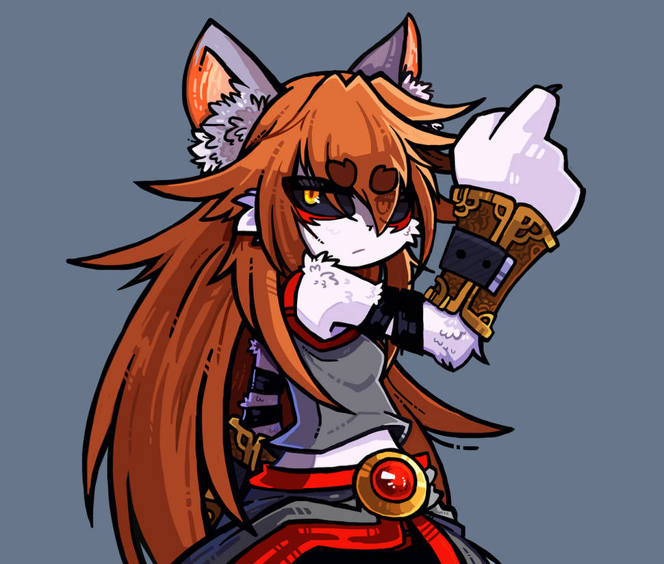

Shacta
Shacta es una guerrera creada con el unico proposito de proteger a su pueblo.
Nombre: Shacta
Especie: Leonario
Género: Femenino
Origen
Shacta es una guerrera creada con el unico proposito de proteger a su pueblo.
Fe y creencias
Aniabet es una fanática declarada de la Selección Argentina de fútbol, y especialmente de Diego Armando Maradona. Es miembro activa de la Iglesia Maradoniana , a la que considera una forma válida de fe moderna.
Su posesión más preciada es una foto autografiada por Maradona, que protege con más cuidado que muchos artefactos mágicos. En momentos de estrés, puede vérsela contemplando la imagen como si fuera un talismán.
Galeria



